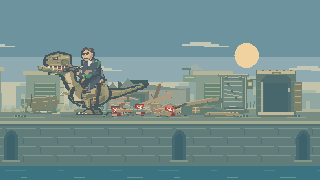
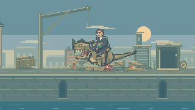
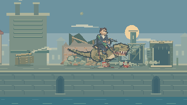
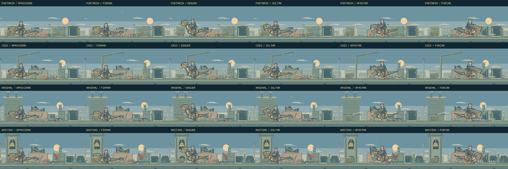

Procurar.
Forçar. Deslocar.
As buscas ganham objetos que cedem, saem do lugar e permanecem no cenário. Madeira, pedra e metal agora pedem movimentos diferentes do dinossauro e do cavaleiro.
Jogar o encontroVer as animações- Aproximação
- Pegada
- Esforço
- Inspeção
- Soltura
Nova revisão da torre do Bastião: saída e aceleração do foguete, explosão em camadas, cobertura partida e escombros com rotação, rebotes e atrito. Ver a cena atualizada a 60 quadros por segundo.
Quatro pátios, materiais que respondem.
80 segundos de composições dirigidas com o renderizador do jogo, sem áudio e sem o combate em primeiro plano. A câmera permanece fixa por 60 segundos e percorre cada pátio nos 20 finais. Não é uma partida gravada ou avaliação de dificuldade.

O esforço vem antes da soltura.
O dinossauro se aproxima, segura a viga e firma o corpo antes de puxar. A cabeça eleva o material enquanto o cavaleiro compensa com o tronco e as rédeas. Há tempo para perceber o peso antes de a peça ser largada.
Depois da queda, ela quica e se acomoda. A busca seguinte reencontra a peça onde ficou, com as marcas que já tinha.
Afastar para investigar.
Uma pedra pode ser retirada dos escombros e deslocada para expor o espaço abaixo. O dinossauro volta a observar esse ponto depois da soltura.
A mandíbula abre conforme o volume da pedra. O som da pegada, os pequenos fragmentos e o ressalto no piso acompanham contatos específicos, em vez de uma sacudida igual para todos os materiais.


Um encaixe que resiste.
A chapa metálica tem uma dobradiça real no desenho e no movimento. O dinossauro prende o puxador, faz força e recua enquanto ela abre. A abertura revela tubos e peças da estrutura de serviço.
Quando ele solta, a chapa retorna com um rebote amortecido e som metálico. As deformações e marcas dos ataques anteriores continuam visíveis.
Uma ação deixa motivo para a próxima.
Um impacto recente pode levar o dinossauro a investigar aquele material. O diretor também dá espaço às ações que ficaram mais tempo sem aparecer, para que a reação ao último ataque não domine a sequência.
As três buscas se juntam a investidas, pisadas, remexidas, caudadas, rajadas e rugidos. O ciclo continua enquanto Feka permanece na rua, com preparação, contato e recuperação entre os movimentos.

As posições e os efeitos pertencem ao plano de fundo. O avanço de Feka continua controlando a entrada da próxima rua. As peças soltas terminam sua queda mesmo quando essa transição acontece.
Direção, tempos e construção · Registro da composição · Rodada anterior
Publicação com build de produção, sem suíte de testes, typecheck ou revisão de navegador, conforme o fluxo do projeto.